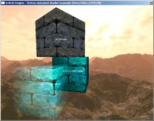

The Irrlicht
Engine Documentation © 2003-2009 by Nikolaus Gebhardt. Generated
on Sun Dec 13 09:14:15 2009 by Doxygen
(1.5.6)
| Home | Namespaces | Hierarchy | Alphabetical List | Class list | Files | Namespace Members | Class members | File members | Tutorials |

This tutorial shows how to use shaders for D3D8, D3D9, and OpenGL with the engine and how to create new material types with them. It also shows how to disable the generation of mipmaps at texture loading, and how to use text scene nodes.
This tutorial does not explain how shaders work. I would recommend to read the D3D or OpenGL documentation, to search a tutorial, or to read a book about this.
At first, we need to include all headers and do the stuff we always do, like in nearly all other tutorials:
#include <irrlicht.h> #include <iostream> using namespace irr; #ifdef _MSC_VER #pragma comment(lib, "Irrlicht.lib") #endif
Because we want to use some interesting shaders in this tutorials, we need to set some data for them to make them able to compute nice colors. In this example, we'll use a simple vertex shader which will calculate the color of the vertex based on the position of the camera. For this, the shader needs the following data: The inverted world matrix for transforming the normal, the clip matrix for transforming the position, the camera position and the world position of the object for the calculation of the angle of light, and the color of the light. To be able to tell the shader all this data every frame, we have to derive a class from the IShaderConstantSetCallBack interface and override its only method, namely OnSetConstants(). This method will be called every time the material is set. The method setVertexShaderConstant() of the IMaterialRendererServices interface is used to set the data the shader needs. If the user chose to use a High Level shader language like HLSL instead of Assembler in this example, you have to set the variable name as parameter instead of the register index.
IrrlichtDevice* device = 0; bool UseHighLevelShaders = false; class MyShaderCallBack : public video::IShaderConstantSetCallBack { public: virtual void OnSetConstants(video::IMaterialRendererServices* services, s32 userData) { video::IVideoDriver* driver = services->getVideoDriver(); // set inverted world matrix // if we are using highlevel shaders (the user can select this when // starting the program), we must set the constants by name. core::matrix4 invWorld = driver->getTransform(video::ETS_WORLD); invWorld.makeInverse(); if (UseHighLevelShaders) services->setVertexShaderConstant("mInvWorld", invWorld.pointer(), 16); else services->setVertexShaderConstant(invWorld.pointer(), 0, 4); // set clip matrix core::matrix4 worldViewProj; worldViewProj = driver->getTransform(video::ETS_PROJECTION); worldViewProj *= driver->getTransform(video::ETS_VIEW); worldViewProj *= driver->getTransform(video::ETS_WORLD); if (UseHighLevelShaders) services->setVertexShaderConstant("mWorldViewProj", worldViewProj.pointer(), 16); else services->setVertexShaderConstant(worldViewProj.pointer(), 4, 4); // set camera position core::vector3df pos = device->getSceneManager()-> getActiveCamera()->getAbsolutePosition(); if (UseHighLevelShaders) services->setVertexShaderConstant("mLightPos", reinterpret_cast<f32*>(&pos), 3); else services->setVertexShaderConstant(reinterpret_cast<f32*>(&pos), 8, 1); // set light color video::SColorf col(0.0f,1.0f,1.0f,0.0f); if (UseHighLevelShaders) services->setVertexShaderConstant("mLightColor", reinterpret_cast<f32*>(&col), 4); else services->setVertexShaderConstant(reinterpret_cast<f32*>(&col), 9, 1); // set transposed world matrix core::matrix4 world = driver->getTransform(video::ETS_WORLD); world = world.getTransposed(); if (UseHighLevelShaders) services->setVertexShaderConstant("mTransWorld", world.pointer(), 16); else services->setVertexShaderConstant(world.pointer(), 10, 4); } };
The next few lines start up the engine just like in most other tutorials before. But in addition, we ask the user if he wants to use high level shaders in this example, if he selected a driver which is capable of doing so.
int main() { // let user select driver type video::E_DRIVER_TYPE driverType = video::EDT_DIRECT3D9; printf("Please select the driver you want for this example:\n"\ " (a) Direct3D 9.0c\n (b) Direct3D 8.1\n (c) OpenGL 1.5\n"\ " (d) Software Renderer\n (e) Burning's Software Renderer\n"\ " (f) NullDevice\n (otherKey) exit\n\n"); char i; std::cin >> i; switch(i) { case 'a': driverType = video::EDT_DIRECT3D9;break; case 'b': driverType = video::EDT_DIRECT3D8;break; case 'c': driverType = video::EDT_OPENGL; break; case 'd': driverType = video::EDT_SOFTWARE; break; case 'e': driverType = video::EDT_BURNINGSVIDEO;break; case 'f': driverType = video::EDT_NULL; break; default: return 1; } // ask the user if we should use high level shaders for this example if (driverType == video::EDT_DIRECT3D9 || driverType == video::EDT_OPENGL) { printf("Please press 'y' if you want to use high level shaders.\n"); std::cin >> i; if (i == 'y') UseHighLevelShaders = true; } // create device device = createDevice(driverType, core::dimension2d<s32>(640, 480)); if (device == 0) return 1; // could not create selected driver. video::IVideoDriver* driver = device->getVideoDriver(); scene::ISceneManager* smgr = device->getSceneManager(); gui::IGUIEnvironment* gui = device->getGUIEnvironment();
Now for the more interesting parts. If we are using Direct3D, we want to load vertex and pixel shader programs, if we have OpenGL, we want to use ARB fragment and vertex programs. I wrote the corresponding programs down into the files d3d8.ps, d3d8.vs, d3d9.ps, d3d9.vs, opengl.ps and opengl.vs. We only need the right filenames now. This is done in the following switch. Note, that it is not necessary to write the shaders into text files, like in this example. You can even write the shaders directly as strings into the cpp source file, and use later addShaderMaterial() instead of addShaderMaterialFromFiles().
const c8* vsFileName = 0; // filename for the vertex shader
const c8* psFileName = 0; // filename for the pixel shader
switch(driverType)
{
case video::EDT_DIRECT3D8:
psFileName = "../../media/d3d8.psh";
vsFileName = "../../media/d3d8.vsh";
break;
case video::EDT_DIRECT3D9:
if (UseHighLevelShaders)
{
psFileName = "../../media/d3d9.hlsl";
vsFileName = psFileName; // both shaders are in the same file
}
else
{
psFileName = "../../media/d3d9.psh";
vsFileName = "../../media/d3d9.vsh";
}
break;
case video::EDT_OPENGL:
if (UseHighLevelShaders)
{
psFileName = "../../media/opengl.frag";
vsFileName = "../../media/opengl.vert";
}
else
{
psFileName = "../../media/opengl.psh";
vsFileName = "../../media/opengl.vsh";
}
break;
}
In addition, we check if the hardware and the selected renderer is capable of executing the shaders we want. If not, we simply set the filename string to 0. This is not necessary, but useful in this example: For example, if the hardware is able to execute vertex shaders but not pixel shaders, we create a new material which only uses the vertex shader, and no pixel shader. Otherwise, if we would tell the engine to create this material and the engine sees that the hardware wouldn't be able to fullfill the request completely, it would not create any new material at all. So in this example you would see at least the vertex shader in action, without the pixel shader.
if (!driver->queryFeature(video::EVDF_PIXEL_SHADER_1_1) && !driver->queryFeature(video::EVDF_ARB_FRAGMENT_PROGRAM_1)) { device->getLogger()->log("WARNING: Pixel shaders disabled "\ "because of missing driver/hardware support."); psFileName = 0; } if (!driver->queryFeature(video::EVDF_VERTEX_SHADER_1_1) && !driver->queryFeature(video::EVDF_ARB_VERTEX_PROGRAM_1)) { device->getLogger()->log("WARNING: Vertex shaders disabled "\ "because of missing driver/hardware support."); vsFileName = 0; }
Now lets create the new materials. As you maybe know from previous examples, a material type in the Irrlicht engine is set by simply changing the MaterialType value in the SMaterial struct. And this value is just a simple 32 bit value, like video::EMT_SOLID. So we only need the engine to create a new value for us which we can set there. To do this, we get a pointer to the IGPUProgrammingServices and call addShaderMaterialFromFiles(), which returns such a new 32 bit value. That's all.
The parameters to this method are the following: First, the names of the files containing the code of the vertex and the pixel shader. If you would use addShaderMaterial() instead, you would not need file names, then you could write the code of the shader directly as string. The following parameter is a pointer to the IShaderConstantSetCallBack class we wrote at the beginning of this tutorial. If you don't want to set constants, set this to 0. The last paramter tells the engine which material it should use as base material.
To demonstrate this, we create two materials with a different base material, one with EMT_SOLID and one with EMT_TRANSPARENT_ADD_COLOR.
// create materials video::IGPUProgrammingServices* gpu = driver->getGPUProgrammingServices(); s32 newMaterialType1 = 0; s32 newMaterialType2 = 0; if (gpu) { MyShaderCallBack* mc = new MyShaderCallBack(); // create the shaders depending on if the user wanted high level // or low level shaders: if (UseHighLevelShaders) { // create material from high level shaders (hlsl or glsl) newMaterialType1 = gpu->addHighLevelShaderMaterialFromFiles( vsFileName, "vertexMain", video::EVST_VS_1_1, psFileName, "pixelMain", video::EPST_PS_1_1, mc, video::EMT_SOLID); newMaterialType2 = gpu->addHighLevelShaderMaterialFromFiles( vsFileName, "vertexMain", video::EVST_VS_1_1, psFileName, "pixelMain", video::EPST_PS_1_1, mc, video::EMT_TRANSPARENT_ADD_COLOR); } else { // create material from low level shaders (asm or arb_asm) newMaterialType1 = gpu->addShaderMaterialFromFiles(vsFileName, psFileName, mc, video::EMT_SOLID); newMaterialType2 = gpu->addShaderMaterialFromFiles(vsFileName, psFileName, mc, video::EMT_TRANSPARENT_ADD_COLOR); } mc->drop(); }
Now it's time for testing the materials. We create a test cube and set the material we created. In addition, we add a text scene node to the cube and a rotation animator to make it look more interesting and important.
// create test scene node 1, with the new created material type 1 scene::ISceneNode* node = smgr->addCubeSceneNode(50); node->setPosition(core::vector3df(0,0,0)); node->setMaterialTexture(0, driver->getTexture("../../media/wall.bmp")); node->setMaterialFlag(video::EMF_LIGHTING, false); node->setMaterialType((video::E_MATERIAL_TYPE)newMaterialType1); smgr->addTextSceneNode(gui->getBuiltInFont(), L"PS & VS & EMT_SOLID", video::SColor(255,255,255,255), node); scene::ISceneNodeAnimator* anim = smgr->createRotationAnimator( core::vector3df(0,0.3f,0)); node->addAnimator(anim); anim->drop();
Same for the second cube, but with the second material we created.
// create test scene node 2, with the new created material type 2 node = smgr->addCubeSceneNode(50); node->setPosition(core::vector3df(0,-10,50)); node->setMaterialTexture(0, driver->getTexture("../../media/wall.bmp")); node->setMaterialFlag(video::EMF_LIGHTING, false); node->setMaterialType((video::E_MATERIAL_TYPE)newMaterialType2); smgr->addTextSceneNode(gui->getBuiltInFont(), L"PS & VS & EMT_TRANSPARENT", video::SColor(255,255,255,255), node); anim = smgr->createRotationAnimator(core::vector3df(0,0.3f,0)); node->addAnimator(anim); anim->drop();
Then we add a third cube without a shader on it, to be able to compare the cubes.
// add a scene node with no shader node = smgr->addCubeSceneNode(50); node->setPosition(core::vector3df(0,50,25)); node->setMaterialTexture(0, driver->getTexture("../../media/wall.bmp")); node->setMaterialFlag(video::EMF_LIGHTING, false); smgr->addTextSceneNode(gui->getBuiltInFont(), L"NO SHADER", video::SColor(255,255,255,255), node);
And last, we add a skybox and a user controlled camera to the scene. For the skybox textures, we disable mipmap generation, because we don't need mipmaps on it.
// add a nice skybox driver->setTextureCreationFlag(video::ETCF_CREATE_MIP_MAPS, false); smgr->addSkyBoxSceneNode( driver->getTexture("../../media/irrlicht2_up.jpg"), driver->getTexture("../../media/irrlicht2_dn.jpg"), driver->getTexture("../../media/irrlicht2_lf.jpg"), driver->getTexture("../../media/irrlicht2_rt.jpg"), driver->getTexture("../../media/irrlicht2_ft.jpg"), driver->getTexture("../../media/irrlicht2_bk.jpg")); driver->setTextureCreationFlag(video::ETCF_CREATE_MIP_MAPS, true); // add a camera and disable the mouse cursor scene::ICameraSceneNode* cam = smgr->addCameraSceneNodeFPS(0, 100.0f, .1f); cam->setPosition(core::vector3df(-100,50,100)); cam->setTarget(core::vector3df(0,0,0)); device->getCursorControl()->setVisible(false);
Now draw everything. That's all.
int lastFPS = -1; while(device->run()) if (device->isWindowActive()) { driver->beginScene(true, true, video::SColor(255,0,0,0)); smgr->drawAll(); driver->endScene(); int fps = driver->getFPS(); if (lastFPS != fps) { core::stringw str = L"Irrlicht Engine - Vertex and pixel shader example ["; str += driver->getName(); str += "] FPS:"; str += fps; device->setWindowCaption(str.c_str()); lastFPS = fps; } } device->drop(); return 0; }
Compile and run this, and I hope you have fun with your new little shader writing tool :).
| |
The Irrlicht
Engine Documentation © 2003-2009 by Nikolaus Gebhardt. Generated
on Sun Dec 13 09:14:15 2009 by Doxygen
(1.5.6) |